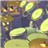

Archivo para el mes de abril de 2009
9 lecciones para la vida de la escalada en roca
En una muy breve charla en TED 2009, Matthew Childs enumera 9 reglas que ha aprendido de la escalada en roca.
Una historia de la creación y el Gran Colisionador de Hadrones
Brian Cox, físico de partículas e investigador del CERN explica el propósito del experimento más grande y más costoso de la historia de la humanidad: descifrar el origen de todo. Sí, todo.
 Música en la era digital [Animación]
Una animación por computadora que resulta en todo un concierto de música electrónica. Muy recomendable.
Exploradores del Sol [Video NASA]
Un magnífico cortometraje de la NASA ilustrando la función de dos de los más importantes instrumentos para la observación de la estrella más cercana a nosotros: El Sol.
 Actualización: Virus de la mente
Actualización: Virus de la mente
Sigo con las actualizaciones y mejoras en la calidad de algunos de los primeros subtítulos., y es el turno de Virus de la mente, por Daniel Dennet, ahora en alta calidad (850×480) en YouTube.
Robots: Guerreros del futuro
Los robots han llegado y ya están cambiando a la humanidad, empezando por la guerra. Una conferencia del investigador P. W. Singer.
La mente y la pizarra en blanco [Conferencia TED]
¿Nacemos o nos hacemos? Steven Pinker responde desde la perspectiva de la psicología experimental.
Actualización: Con los ojos brillantes
Fé de erratas, actualización con correción de algunos garrafales errores de oído al subtitular la conferencia de Ben Zander.
Cometas y la energía del futuro [Conferencia TED]
Utilizando cometas para obtener energía limpia del viento, una presentación en TED 2009 por Saul Griffith.
Categorías
Archivo
Últimas anotaciones en cada categoría

Divulgación
El dinero no fomenta la creatividad: Daniel Pink en TEDGlobal 2009

Noticias
Ver tu mente en tiempo real: Christopher deCharms en TED 2008
![Música en la era digital [Animación]](../../wp-content/themes/tma/images/featured/animation_04_2009_featured.jpg)
Ocio
Música en la era digital [Animación]